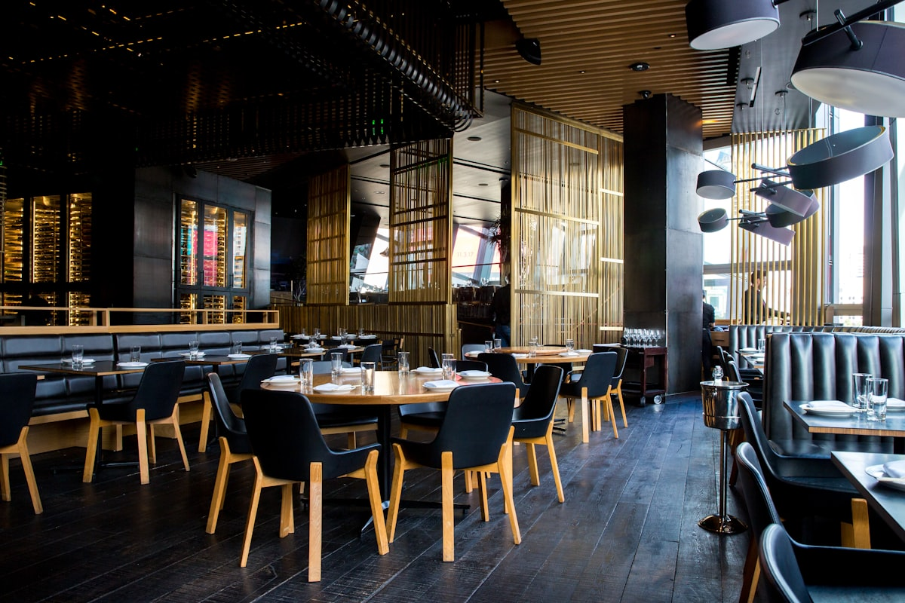
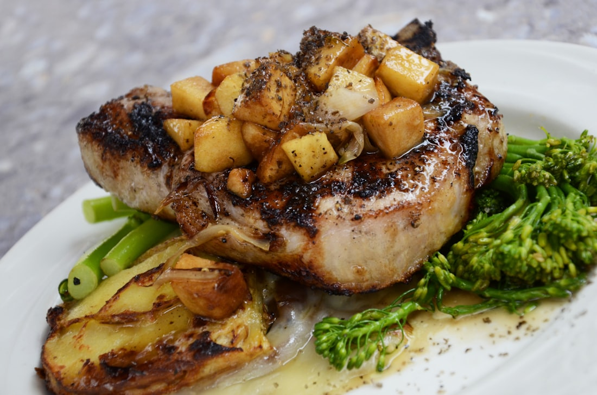
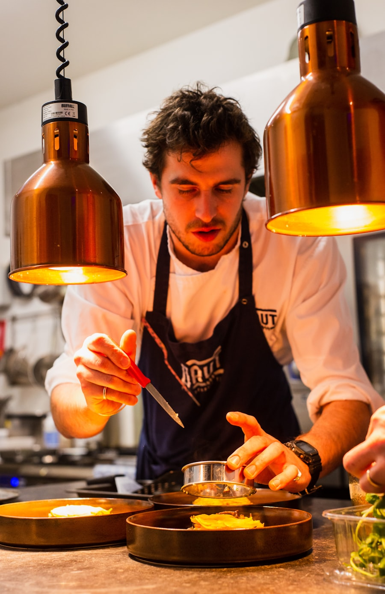
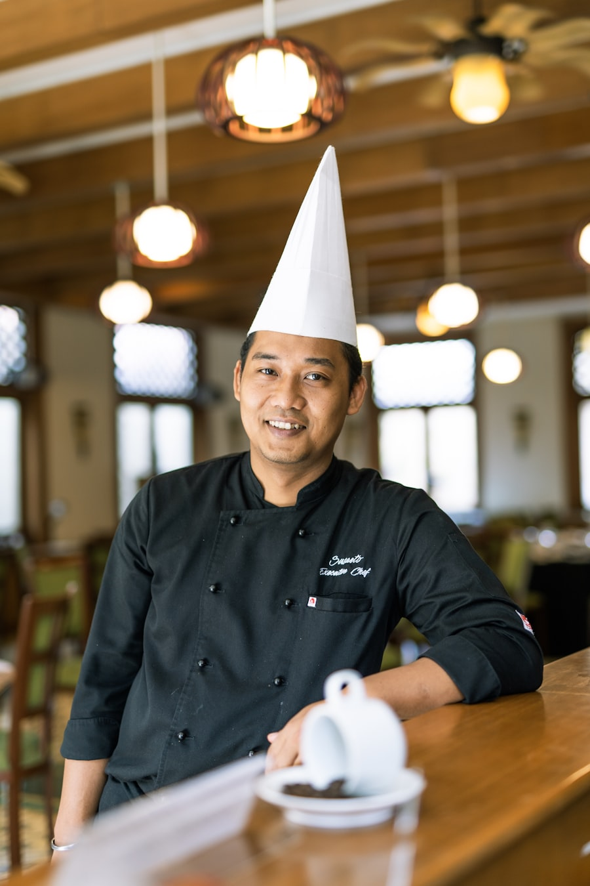
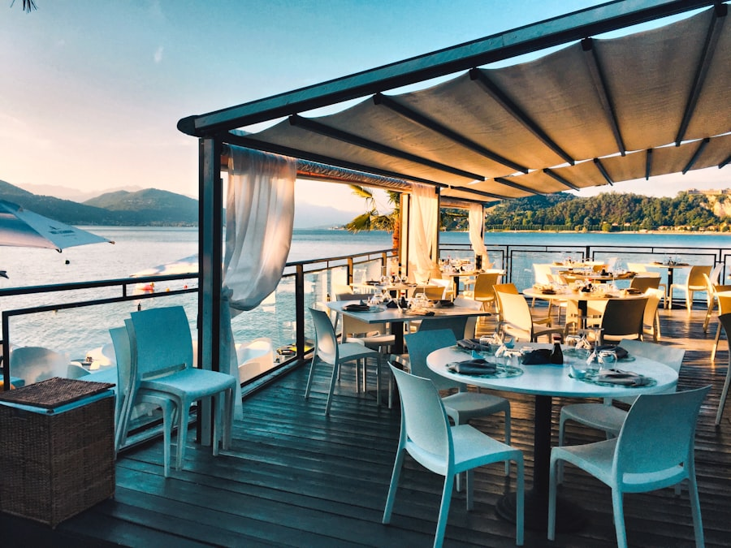

01 — Proximity
Grown close, cooked fresh
If we can't drive to where it was grown in under an hour, it's probably not on the plate. Distance is the enemy of flavour, and the friend of waste.
Our story
Sorrel & Stone began with a question we couldn't shake: why did the best food in our valley always seem to leave it? This is what we built instead.

Where it started
Esme Hartley and Tom Reed met in a city kitchen, both raised within a few miles of the Harlow. They spent years cooking produce that had been picked unripe, packed in a cold lorry and trucked three hundred miles before it reached a pan — and they kept thinking of the growers back home doing the opposite, and struggling to sell it.
In 2013 they came back. They found the old Marsh feed mill standing empty, its waterwheel seized and pigeons in the rafters, and they spent a winter clearing it out by hand. The first menu had nine dishes and the dining room held twenty-six covers. It still does.
What we believe
01 — Proximity
If we can't drive to where it was grown in under an hour, it's probably not on the plate. Distance is the enemy of flavour, and the friend of waste.
02 — Honesty
A carrot pulled that morning doesn't need rescuing. We cook simply, season carefully, and try to get out of the food's way wherever we can.
03 — Fairness
We pay the price a farmer asks, not the price we can squeeze. Good growing is hard, precarious work, and cheap food always comes from someone's loss.
A decade in the valley
It hasn't been a straight line — more a slow ferment. A few of the moments that shaped the place.

Esme and Tom take the lease on the derelict Marsh feed mill and spend the winter stripping it back to its stone and timber bones.
Sorrel & Stone opens with a nine-dish menu and produce from four neighbouring farms. The first night sells out; the second doesn't.
We break ground on the kitchen garden behind the mill — a half-acre of raised beds that now grow our herbs, leaves and edible flowers.
The old grain loft becomes The Hayloft, a private dining room for long-table dinners, harvest suppers and the occasional wedding.
Named Restaurant of the Year by the Valley Table Guide, with a special mention for our work alongside local growers.
Twenty-three suppliers, a menu that turns over every few weeks, and the same twenty-six seats we started with.
The hands in the kitchen

Co-founder · Head chef
Writes the week's menu most mornings, usually after a phone call from a farmer telling her what's ready. Has a weakness for anything pickled.

Co-founder · Front of house
Runs the floor, the cellar and most of the supplier relationships. Can tell you the name of the field your potatoes came from.

Sous chef
Keeper of the ferment shelf and the kitchen garden. Joined as a weekend pot-wash in 2016 and never quite left.
In Esme's words
"We're not really trying to be the best restaurant. We're trying to be the truest one — to cook this valley so honestly that you could taste where you were with your eyes shut."Esme Hartley · Co-founder & Head Chef
The story reads better with a fork in hand. Join us for dinner Wednesday through Sunday.